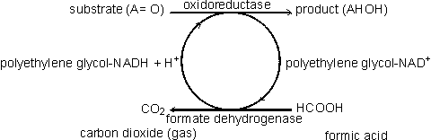
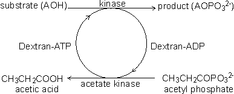

Enzyme Technology
Coenzyme-regenerating systems
Many oxidoreductases and all ligases utilise coenzymes (e.g., NAD+, NADP+,
NADH, NADPH, ATP), which must be regenerated as each product molecule is formed.
Although these represent many of the most useful biological catalysts, their
application is presently severely limited by the high cost of the coenzymes and
difficulties with their regeneration. These two problems may both be overcome at
the same time if the coenzyme is immobilised, together with the enzyme, and
regenerated in situ.
A simple way of immobilising/regenerating coenzymes would be to use
whole-cell systems and these are, of course, in widespread use. However as
outlined earlier, these are of generally lower efficiency and flexibility than
immobilised-enzyme systems. Membrane reactors (see Chapter
5) may be used to
immobilise the coenzymes but the pore size must be smaller than the coenzyme
diameter, which is extremely restrictive. Coenzymes usually must be derivatised
for adequate immobilisation and regeneration. When successfully applied, this
process activates the coenzymes for attachment to the immobilisation support but
does not interfere with its biological function. The most widely applied
synthetic routes involve the alkylation of the exocyclic N6-amino nitrogen of
the adenine moiety present in the coenzymes NAD+, NADP+, NADH, NADPH, ATP and
coenzyme A.
In some applications, such as those using membrane reactors it is only
necessary that the coenzyme has sufficient size to be retained within the
system. High molecular weight water-soluble derivatives are most useful as they
cause less diffusional resistance than insoluble coenzyme matrices. Dextrans,
polyethyleneimine and polyethylene glycols are widely used. Relatively low
levels of coenzyme attachment are generally sought in order to allow greater
freedom of movement and avoid possible inhibitory effects. The kinetic
properties of the derived coenzymes vary, depending upon the system, but
generally the Michaelis constants are higher and the maximum velocities are
lower than with the native coenzymes. Coenzymes immobilised to insoluble
supports presently have somewhat less favourable kinetics even when
co-immobilised close to the active site of their utilising enzymes. This
situation is expected to improve as more information on the protein conformation
surrounding the enzymes' active sites becomes available and immobilisation
methods become more sophisticated. However, the cost of such derivatives is
always likely to remain high and they will only be economically viable for the
production of very high value products.
There are several systems available for the regeneration of the derivatised
coenzymes by chemical, electrochemical or enzymic means. Enzymic regeneration is
advantageous because of its high specificity but electrochemical procedures for
regenerating the oxidoreductase dinucleotides are proving competitive. To be
useful in regenerating coenzymes, enzymic processes must utilise cheap
substrates and readily available enzymes and give non-interfering and easily
separated products. Formate dehydrogenase and acetate kinase present useful
examples of their use, although the presently available commercial enzyme
preparations are of low activity:

[8.7]

[8.8]
Home
| Back | Next
This page was established in 2004 and last updated by Martin
Chaplin
on
6 August, 2014
|